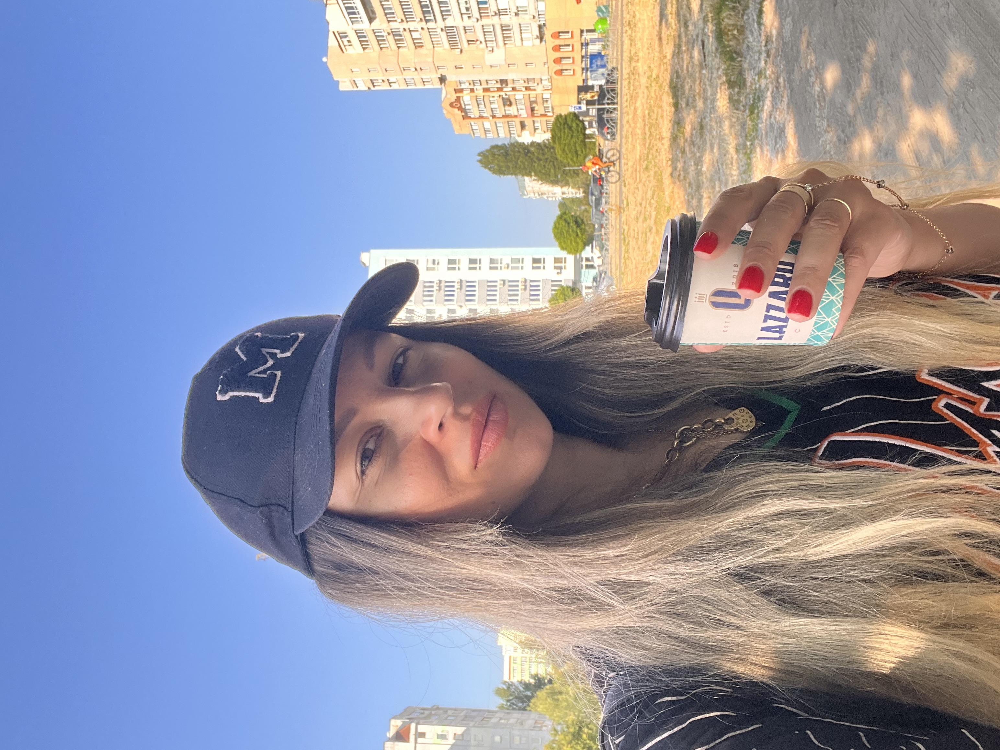
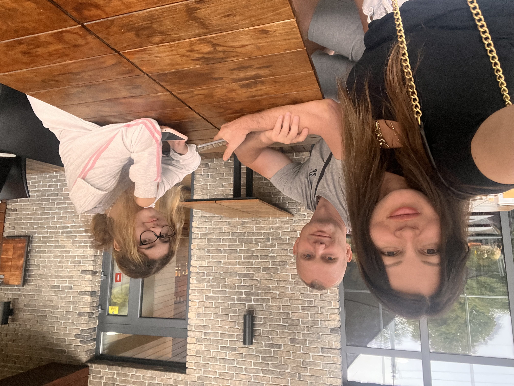

Привіт, я Юля Романенко.
Я з міста Запоріжжя. Зараз я переїхала до м.Черкаси, бо тут моя дитина має змогу навчатись не онлайт, і я дуже радію цьому.
Зараз я навчаюсь на супер курсі, та освоюю нові знання- кожен раз після навчання я радію тому що попала до одного з найкращіх вчителів.
В мене є мрії, цей курс-пачаток їх здійснення.
Сторінки мого вчителя:
Мої Мрії
Я завжди запитую себе, чим я буду займатись в старості та - відповідь одна- працьовати за ноутом- створювати проекти, допомогати людям щоб вони більше заробляли. Я хочу навідувати своїх друзів і мати на це кошти в різному віці. Я хочу розвиватися скільб років мені не було.
- Навчитись робити сайти від покатку до завершення, на дуже високому та проффесійному рівні
- Знайти компанію в котрій буду працовати за графіком щоб вісточало проводити час з рідними, работу в якій набуду багато досвіда та навичок.В якій зможу рости.
- Освоїти мови програмування та кібербезпеку
Опит праці
Останні роки я працовала на себе, та зрозуміла що більше не хочу контролювати багато процессів та в свободий час думати тро розвиток бізнесу. Я хочу просто гарно віконувати роботу і не піклуватись за організаційні вопроси, мені набридло бути керівником, хочу бути просто профессіоналом.
-
Торгівля
Я була однією з найкращіх працівників, дівчата казали що коли я пішла ще довго мене ставили в приклад. Я мала вісокий коефіцієнт продажів, але головне що я здобула навички спілкування з людьми, навички гібкості в комунікаціі, на практиці зрозуміла важливість багатьох аспектів для продажу: подачі товара, важливість доступності товару навіть важливість часу, аби клієнт не передумав. Важливіть того що може відволікати та зупиняти кліентів.
-
Викладач
Я розробила свої техніки, до мене багато людей приїздило навчитись, це дало мені навічки структурувати информацію, та дало розуміння що все нове підвласно будь-кому якщо буде багато практики.
-
Керівнік
Свій бізнес я мала 11 років, в мене працовало 11 людей- не великий бізнес, и я його любила. Я навчилась контрольвати багато процессів.Здобула досвід в тому що більш єфективно в рекламі, в тому що важливо кожен день та має вплив на розвиток.
Родина
Вони моя підтримка, а я їхня. Дочка (їй 14) вчить дизайн в IT-STEP вже 5 років і їй це дуже подобаеться, Коханий дуже любить мене і піклується про мене, а я кохаю його. В нас дуже дружня сім'я.
Хобі
Я мрію аби моя робота стала моїм хобі
- Пізнавати про сайти
- На весні мі з чоловіком їдемо до Запоріжжя та саджаєм фруктові дерева, доречі саджаемо просто на вулицях, іноді я сажаю квіти там де прогосто гуляєм. Я це роблю для себе, дуже цікаво бачить коли гуляємо як воно росте- це наповнює і дає багато супер емоцій
- Психологія- я полюбляю різні тренинги про відносини
- Куштувати нові блюда
- Астрологія -її вивчала 4 роки для себе и доньки , аби пізнати як можно вплинуть на деякі речі
- Полюбляю цікаві фільми- тріллери
- Полюбляю грати в Мафію